ELF ON THE SHELF
Eine Weihnachtstradition
Allgemeines
Elf on the Shelf ist eine Weihnachtstradition, die ursprünglich aus Amerika zu uns nach Europa gekommen ist. Die kleine Figur kommt direkt vom Weihnachtsmann zu Familien in deren Häuser - die Kinder geben dem Elf einen Namen und schon entfalten sich seine Zauberkräfte. Das heißt: der kleine Kerl erwacht nachts, wenn alle schlafen, zum Leben und macht Unfug, ausserdem kann er zum Weihnachtsmann fliegen um ihm zu berichten was sich Kinder wünschen und ob sie auch "brav" sind. Morgens können die Kinder dann sehen, was der Elf angestellt hat. Der Elf verwandelt sich tagsüber in eine Puppe. Es gibt eigentlich nur eine wichtige Regel: Man darf den Elf nicht berühren, sonst verliert er seine Kräfte. Hier gibt es weitere Informationen.
Unser Emil
Im Jahr 2020 entdeckte ich diese Tradition und da dieses Jahr geprägt war von Lockdowns und Corona, also kein besonders lustiges Jahr war, beschloss ich, dass wir so einen Wichtel zur Unterhaltung der Kinder (und uns) brauchen. Ich hab die Geschichte ein bisschen geändert - den Weihnachtsmann mit dem Christkind getauscht, einen entsprechenden Brief geschrieben und eines Tages war er dann da. Die Kinder nannten ihn EMIL und wir warteten gespannt was passieren würde.
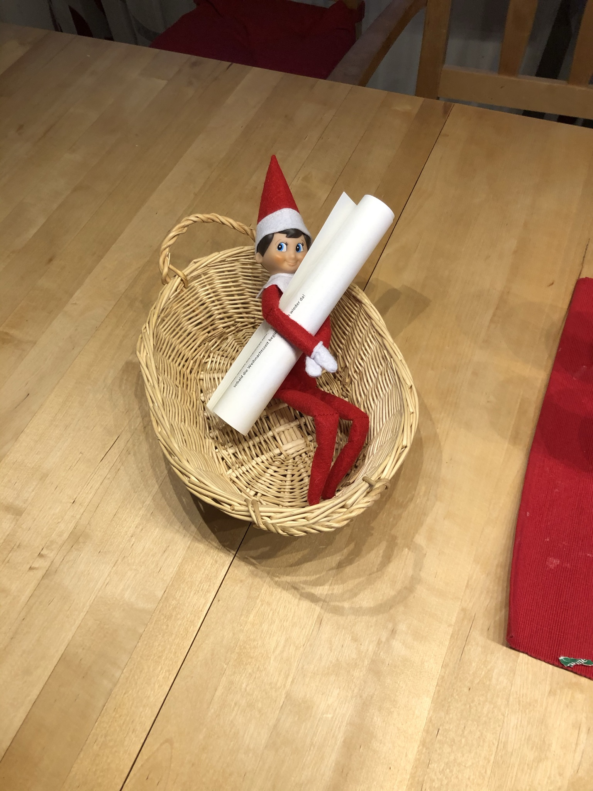
Die Streiche
Und tatsächlich: Jeden Tag hat sich Emil einen anderen Streich einfallen lassen. Einmal hat er zum Beispiel viel zu viele Süßigkeiten gegessen...
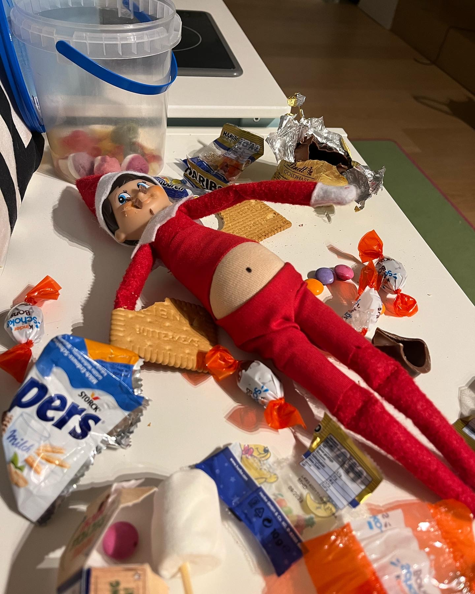
...um dann am nächsten Tag im Fitnessstudio des Duracell-Hasen zu trainieren.
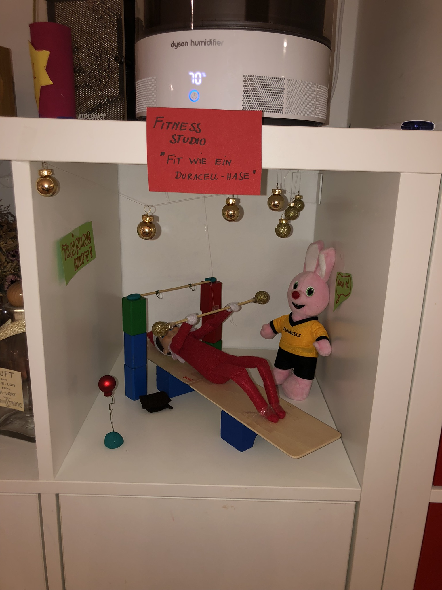
Der Bauch konnte schließlich nicht bleiben - denn er will eigentlich das Herz von Barbie erobern... Was Ken wiederum nicht besonders gut gefällt.
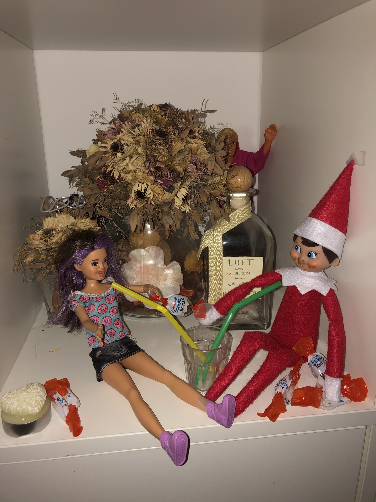
Manchmal übertreibt er es allerdings, dann kann schon mal passieren das die Milch sauer wird.
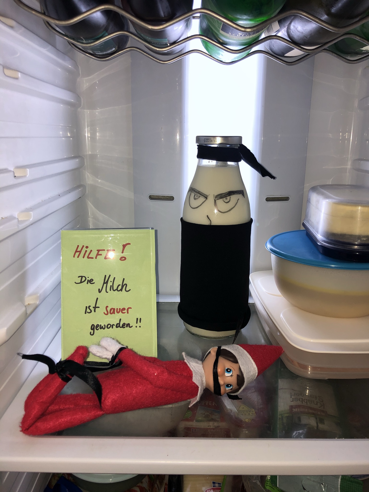
Aber auch die eher ernsten Themen wie Homeschooling oder Coronatests werden von Emil mit viel Humor behandelt.
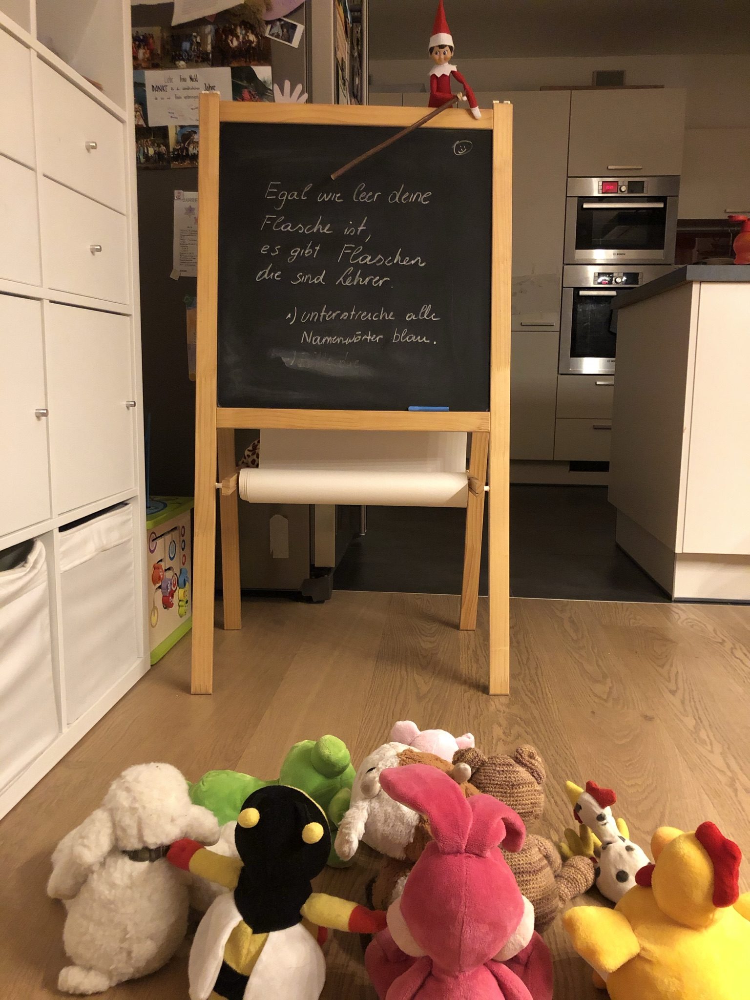
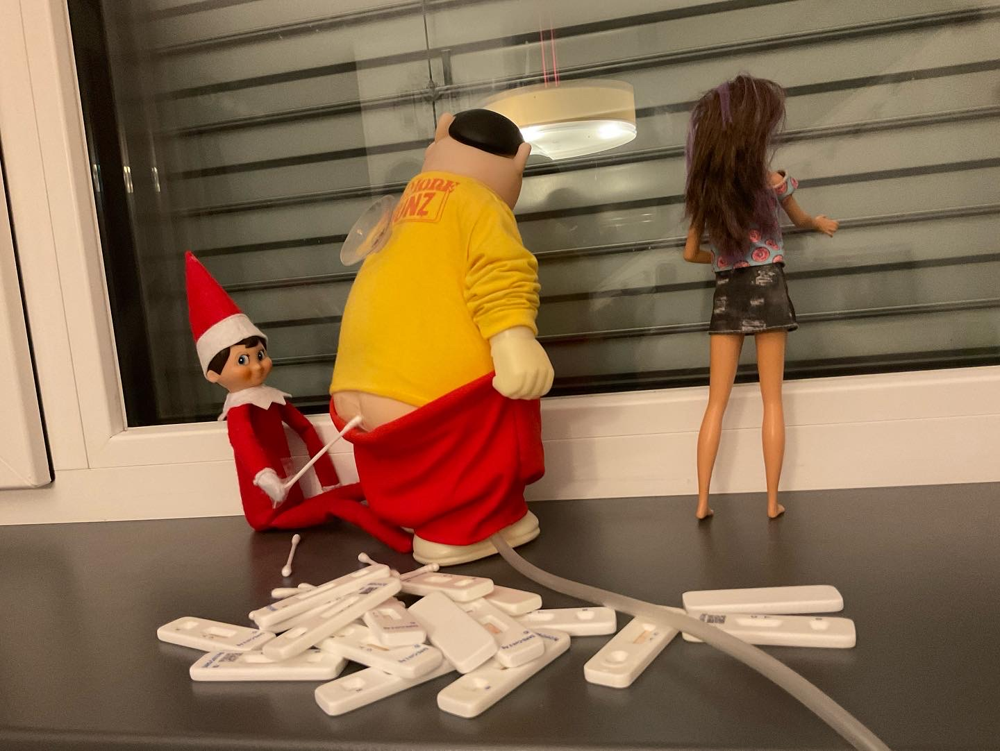
Emil hat uns den ganzen Advent lang so gut unterhalten, dass ich begann die Streiche auch auf Facebook zu teilen - einfach weil das damals vorherrschende Thema Covid war und ich ein wenig andere Inhalte teilen wollte. Emil hat innerhalb kurzer Zeit einige Fans dazugewonnen. Seit damals kommt er jedes Jahr wieder und wird sehnsüchtig erwartet - von meinen Kindern und von den Socialmedia Fans.
Emil 2023
Emil Tag 1
Emil kommt endlich an, die Kinder haben ihm schon ein Haus gebaut, damit er auch wirklich kommt.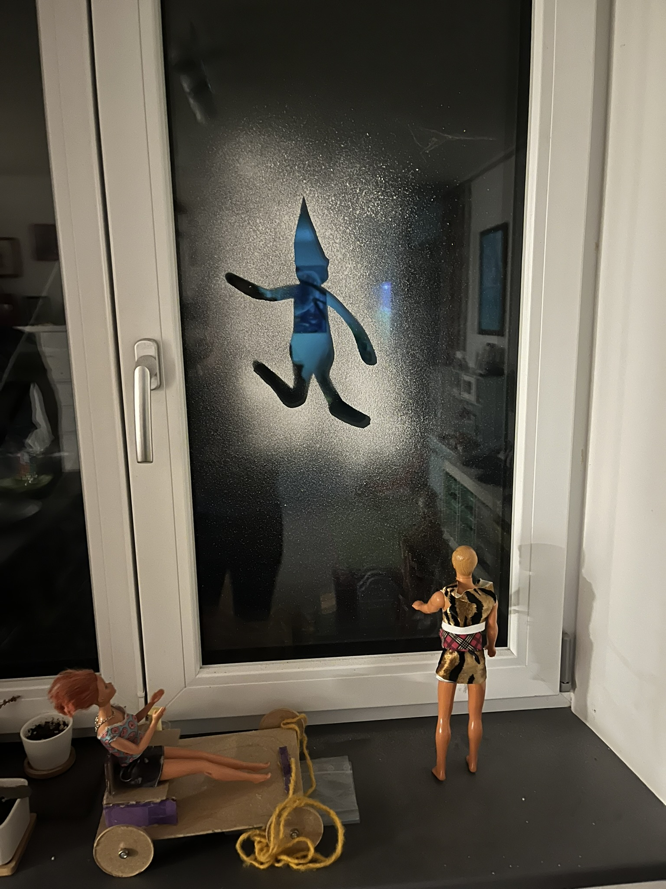 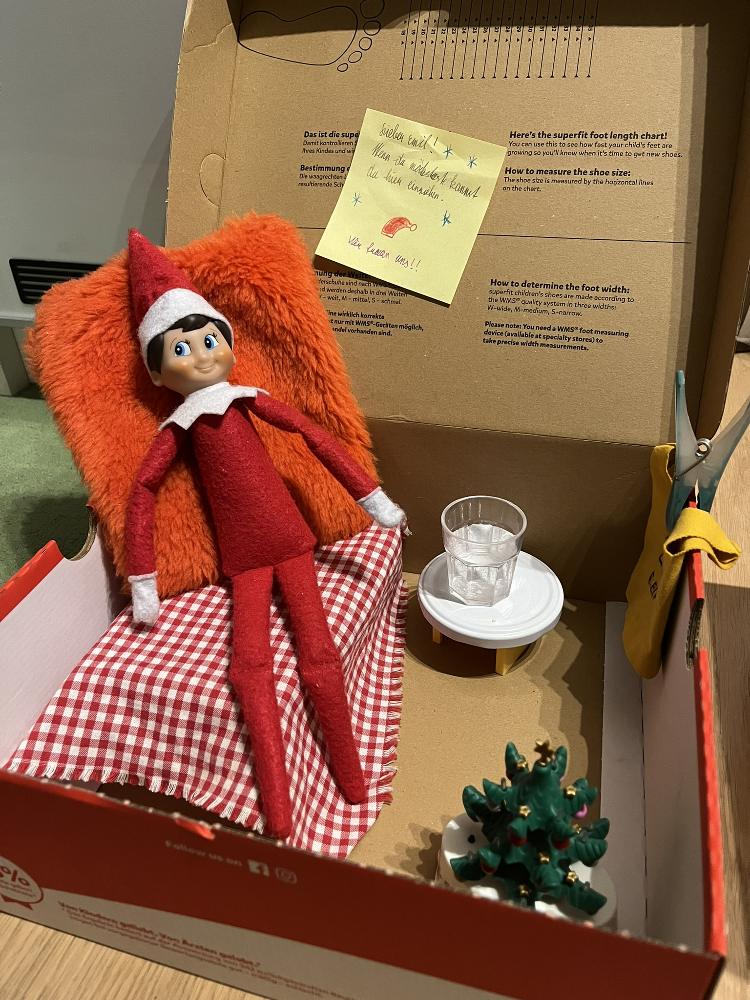
-
Emil Tag 2
Mehr Glitzer braucht die Welt, Barbie findet Glitzer natürlich super, sonst wär sie ja nicht Barbie. Nicht so toll finden es die Christbaumkugeln, die schauen schon ganz entsetzt. Wir sind gespannt was er mit dem Glitzer vorhat.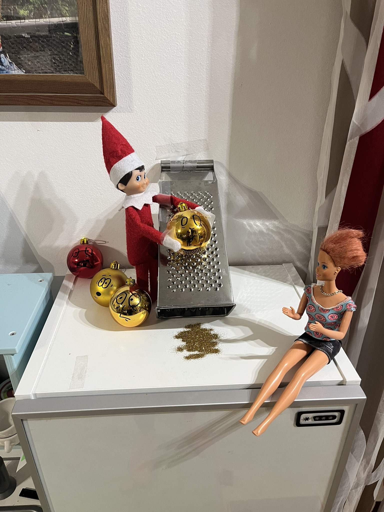
-
Emil Tag 3
Der moderne Hausmann weiß natürlich, dass Glitzer Teufelszeug ist. Ein Windstoß reicht, und man wird ihn nie wieder los! Also schnell die Schürze umgebunden und den Sauger geholt. Aber irgendwas ist da ziemlich schief gegangen. Ob das ein Unfall oder Absicht war werden wir wohn nie erfahren. Wie wird das weitergehen???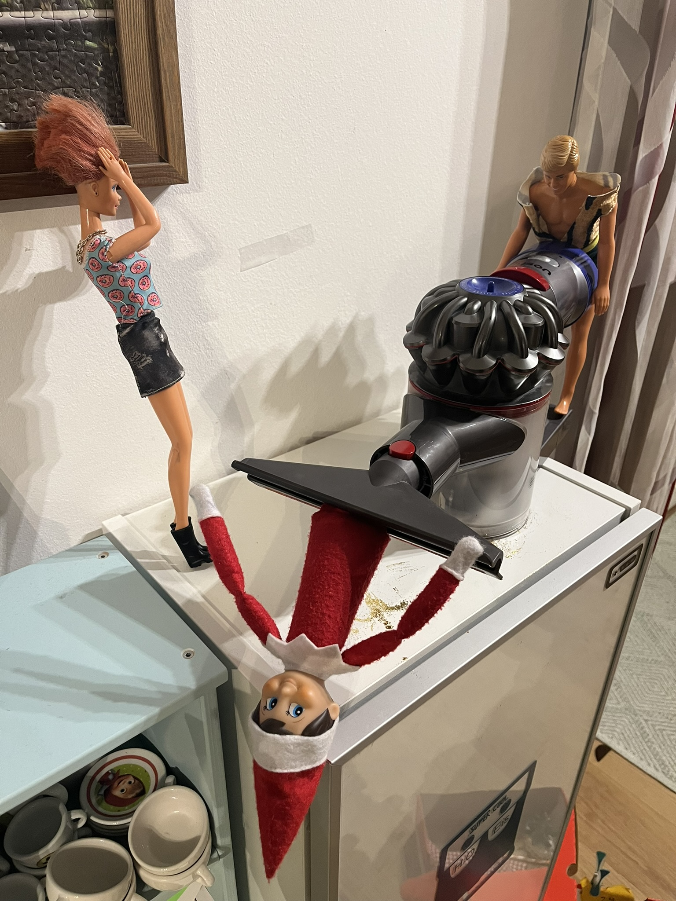
- ... Fortsetzung folgt...